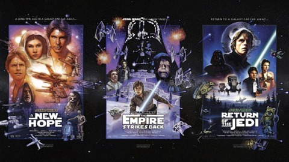
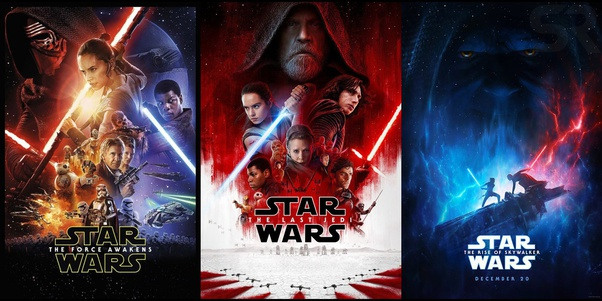
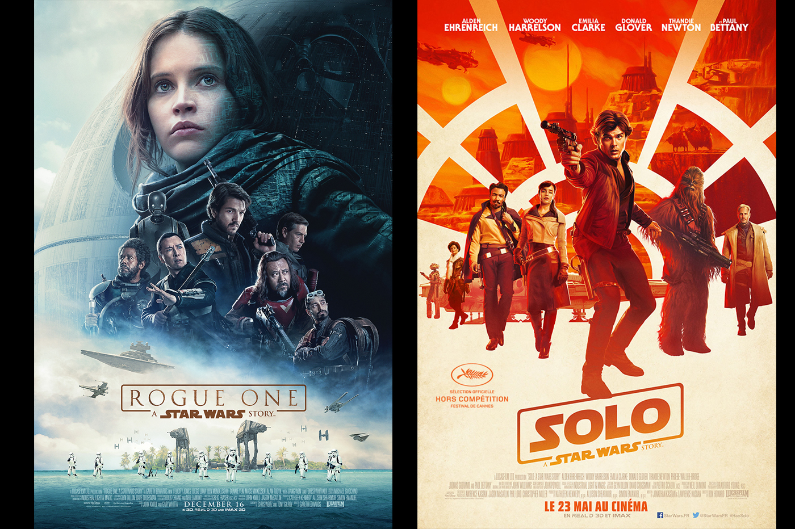
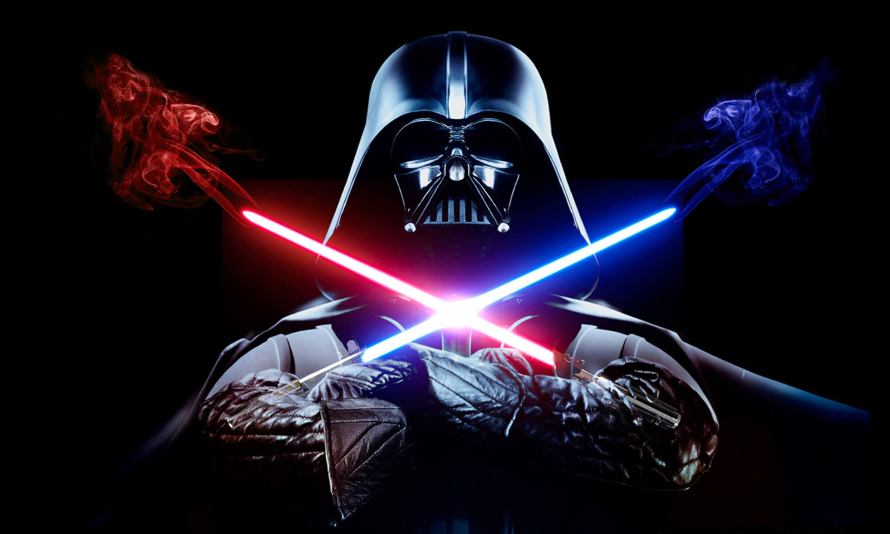

Original Trilogy

- Episode IV - A New Hope
- Episode V - The Empire Strikes Back
- Episode VI - Return of The Jedi
Prequel Trilogy

- Episode I - The Phantom Menace
- Episode II - Attack of The Clones
- Episode III - Revenge of The Sith
Sequel Trilogy

- Episode VII - The Force Awakens
- Episode VIII - The Last Jedi
- Episode IX - The Rise of Skywalker
Spin Offs

- The Clone Wars
- Rogue One
- Solo
